건축기사 (2012-03-04 기출문제)
1과목: 건축계획
1. 다음 설명에 알맞은 공동주택의 단면형식은?
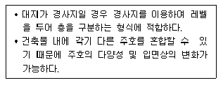
- 단층형
- 플랫형
- 메조넷형
- 스킵 플로어형
(정답률: 76%)

2. 다음 중 계획시 자연채광이 주요한 고려사항이 되지 않는 것은?
- 사무소 사무실
- 학교 교실
- 병원 병실
- 백화점 매장
(정답률: 87%)
3. 한국건축의 평면형식에 관한 설명으로 옳지 않은 것은?
- 쌍봉사 대웅전은 2칸 장방형 평면이다.
- 퇴 없이 측면이 단 칸인 평면은 평안도 살림집에서 많이 나타난다.
- 중부지방 민가에서는 ㄱ자형 평면이 많은데 이를 곱은자집이라고 한다.
- 다각형 평면으로는 육각과 팔각이 많이 사용되었는데 대개 정자에서 나타난다.
(정답률: 69%)
4. 학교건축의 특별교실 계획에 관한 설명으로 옳지 않은 것은?
- 화학교실에는 실험에 따른 유독가스 처리를 위한 설비를 설치한다.
- 음악교실은 잔향시간이 길면 길수록 좋으므로 흡음재를 사용하지 않도록 한다.
- 생물교실은 남측 방향의 1층에 배치하는 것이 좋으며, 직접 옥외로의 출입이 편리하도록 한다.
- 가정생활에 관련된 교육을 실습하는 가정과 교실의 바닥은 내수적이고 위생적인 재료로 마감하는 것이 좋다.
(정답률: 87%)
5. 다음 중 시티 호텔(city hotel)에 속하지 않는 것은?
- 클럽 하우스
- 터미널 호텔
- 커머셜 호텔
- 아파트먼트 호텔
(정답률: 77%)
6. 호텔건축에서 리넨실(linen room)의 용도는?
- 주방의 식품고
- 종업원 대기실
- 화물 엘리베이터 홀
- 객실의 시트, 침구 등을 수납하는 실
(정답률: 88%)
7. 초등학교 건축계획에서 융통성의 요구를 해결할 수 있는 효율적 방안에 해당하는 것은?
- 교사를 고층화한다.
- 내력벽 구조로 한다.
- 각 교실을 특수화한다.
- 공간을 다목적으로 사용한다.
(정답률: 76%)
8. 공연장의 객석 계획에서 잘 보이는 동시에 실제적으로 관객을 수용해야 하는 공연장에서 큰 무리가 없는 거리인 제1차 허용거리의 한도는?
- 15m
- 22m
- 38m
- 52m
(정답률: 80%)
9. 주택의 동선계획에 관한 설명으로 옳지 않은 것은?
- 동선은 가능한 굵고 짧게 계획하는 것이 바람직하다.
- 동선의 3요소 중 속도는 동선의 공간적 두께를 의미한다.
- 개인, 사회, 가사노동권의 3개 동선은 상호간 분리하는 것이 좋다.
- 화장실, 현관 등과 같이 사용빈도가 높은 공간은 동선을 짧게 처리하는 것이 중요하다.
(정답률: 84%)
10. 건축계획단계에서의 조사방법에 관한 설명으로 옳지 않은 것은?
- 설문조사를 통하여 생활과 공간간의 대응 관계를 규명하는 것은 생활행동 행위의 관찰에 해당된다.
- 이용 상황이 명확하게 기록되어 있는 시설의 자료 등을 활용하는 것은 기존자료를 통한 조사에 해당된다.
- 건물의 이용자를 대상으로 설문을 작성하여 조사하는 방식은 생활과 공간의 대응관계 분석에 유효하다
- 주거단지에서 어린이들의 행동특성을 조사하기 위해서는 생활행동 행위 관찰 방식이 일반적으로 가장 적절한 방법이다.
(정답률: 80%)
11. 다음 중 도서관의 기둥간격 결정과 가장 밀접한 관계가 있는 공간은?
- 서고
- 캐럴
- 출납실
- 시청각재료실
(정답률: 87%)
12. 은행 건축계획에 관한 설명으로 옳지 않은 것은?
- 영업대의 높이는 고객 대기실에서 최소 140cm 이상으로 계획한다.
- 주출입구에 전실을 둥 경우에 바깥문은 밖여닫이 또는 자재문으로 계획한다.
- 은행실은 은행건축의 주체를 이루는 곳으로 기둥수가 적고 넓은 실이 요구된다.
- 영업실은 고객을 직접 상대하는 업무 외에는 고객과의 직접적인 접촉을 피하도록 계획한다.
(정답률: 72%)
13. 미술관 전시실의 순회형식 중 갤러리 및 코리더 형식에 관한 설명으로 옳은 것은?
- 많은 전시실을 순서별로 통하여야 하는 불편이 있다.
- 필요시에는 자유로이 독립적으로 전시실을 폐쇄할 수 있다.
- 프랭크 로이드 라이트는 이 형식을 기본으로 뉴욕 구겐하임 미술관을 설계하였다.
- 중심부에 하나의 큰 홀을 두고 그 주위에 각 전시실을 배치하여 자유로이 출입하는 형식이다.
(정답률: 78%)
14. 근린생활권의 주택단지의 단위 중 어린이 놀이터가 중심이 되는 것은?
- 인보구
- 근린분구
- 근린주구
- 근린지구
(정답률: 70%)
15. 오피스의 엘리베이터 배치계획에 관한 설명으로 옳은 것은?
- 4대 이하일 경우 일렬배치로 한다.
- 대면배치에서 대면거리는 2m 정도로 하는 것이 좋다.
- 오피스 내의 주출입구홀에 직접적으로 면하여 배치하지 않도록 한다.
- 오피스를 방문하거나 이용하는 외래자에게 잘 보이지 않는 위치에 배치한다.
(정답률: 55%)
16. 주택의 부엌 계획에 관한 설명으로 옳지 않은 것은?
- 일사가 긴 서쪽은 음식물이 부패하기 쉬우므로 피하도록 한다.
- 작업 삼각형은 냉장고와 개수대 그리고 배선대를 잇는 삼각형이다.
- 부엌가구의 배치유형 중 ㄱ자형은 부엌과 식당을 겸할 경우 많이 활용되는 형식이다.
- 부엌가구의 배치유형 중 일렬형은 면적이 좁은 경우 이용에 효과적이므로 소규모 부엌에 주로 활용된다.
(정답률: 81%)
17. 극장 객석의 음향계획에 관한 설명으로 옳은 것은?
- 객석내 소음은 40~50dB 이하로 한다.
- 발코니 객석의 길이는 하부층 객석 길이의 최대 1/2이내로 한다.
- 객석부 공간의 앞면 경사천장은 객석 뒤쪽에 도달하는 음을 보강하도록 계획한다.
- 무대에 가까운 벽은 흡음재로 하고 멀어짐에 따라서 반사재의 벽을 배치하는 것이 원칙이다.
(정답률: 57%)
18. 초기 기독교 건축 양식의 기원이 된 건물의 형태는?
- 카타콤
- 판테온
- 마스타바
- 바실리카
(정답률: 72%)
19. 주택의 계단에 관한 설명으로 옳지 않은 것은?
- 주택의 계단은 가능한 한 큰 면적을 갖는 것이 좋다.
- 돌음계단은 일반적으로 긴 물건을 운반하기 곤란하다.
- 계단은 경사가 완만할수록 올라가기가 편한 것은 아니다.
- 계단을 거실에 설치하는 경우 열손실에 대한 고려가 필요하다.
(정답률: 82%)
20. 사무소 건축에서 중심코어 형식에 관한 설명으로 옳은 것은?
- 구조코어로서 바람직한 형식이다.
- 유효율이 낮아 임대 사무소 건축에는 부적합하다.
- 일반적으로 기준층 바닥면적이 작은 경우에 적합하다.
- 2방향 피난에는 이상적인 관계로 방재/피난상 가장 유리한 형식이다.
(정답률: 80%)
2과목: 건축시공
21. 말뚝박기 시공법 중 기성말뚝공법에 속하지 않는 것은?
- 어스드릴공법
- 디젤해머공법
- 프리보링공법
- 유압해머공법
(정답률: 56%)
22. 콘크리트의 건조수축 영향인자에 대한 설명 중 옳지 않은 것은?
- 시멘트의 화학성분이나 분말도에 따라 건조수축량이 변화한다.
- 골재 중에 포함된 미립분이나 점토, 실트는 일반적으로 건조수축을 증대시킨다.
- 바다모래에 포함된 염분은 그 양이 많으면 건조수축을 증대시킨다.
- 단위수량이 증가할수록 건조수축량은 작아진다.
(정답률: 67%)
23. PERT-CPM 공정표 작성시에 EST와 EFT의 계산방법 중 옳지 않은 것은?
- 작업의 흐름에 따라 전진 계산한다.
- 선행작업이 없는 첫 작업의 EST는 프로젝트의 개시시간과 동일하다.
- 어느 작업의 EFT는 그 작업의 EST에 소요일수를 더하여 구한다.
- 복수의 작업에 종속되는 작업의 EST는 선행작업 중 EFT의 최소값으로 한다.
(정답률: 78%)
24. 벽면적 4.8m2 크기에 1.5B 두께로 붉은 벽돌을 쌓고자 할 때 벽돌의 소요매수는?(오류 신고가 접수된 문제입니다. 반드시 정답과 해설을 확인하시기 바랍니다.)
- 925매
- 963매
- 1,109매
- 1,245메
(정답률: 79%)
25. 철골공사에서의 가스절단에 대한 설명 중 옳지 않은 것은?
- 가스절단은 설비가 복잡하여 작업공구를 가지고 다니기 불편하다.
- 톱절단에 비하여 자유롭게 할 수 있다.
- 절단모양을 자유롭게 할 수 있다.
- 절단면이 거칠고 강재를 용융하여 절단하므로 절단선에서 3mm 정도의 부분은 변질된다.
(정답률: 65%)
26. 돌로마이트 플라스터 바름에 대한 설명 중 옳지 않은 것은?
- 정벌바름은 반죽하여 12시간 정도 지난 후 사용한다.
- 바름두께가 균일하지 못하면 균열이 발생하기 쉽다.
- 돌로마이트 플라스터는 수경성이므로 해초풀을 적당한 비율로 배합해서 사용해야 한다.
- 시멘트와 혼합하여 2시간 이상 경과한 것은 사용할 수 없다.
(정답률: 72%)
27. 콘크리트의 재료분리현상을 줄이기 위한 방법으로 옳지 않은 것은?
- 중량골재와 경량골재 등 비중차가 큰 골재를 사용한다.
- 플라이애시를 적당량 사용한다.
- 세장한 골재보다는 둥근골재를 사용한다.
- AE제나 AE감수제 등을 사용하여 사용수량을 감소시킨다.
(정답률: 62%)
28. 다음 중 계측관리 항목 및 기기에 대한 설명으로 옳지 않은 것은?
- 흙막이벽의 응력은 Strain Gauge(변형계)를 이용한다.
- 주변건물의 경사는 Tiltmeter(건물 경사계)를 이용한다.
- 지하수의 간극수압은 Water level Meter(지하수위계)를 이용한다.
- 버팀보, 앵커 등의 축하중 변화상태의 측정은 Load Cell(하중계)을 이용한다.
(정답률: 65%)
29. 기계경비 산정과 관련된 시간당 손료계수를 구성하는 3가지 요소가 아닌 것은?
- 상각비 계수
- 관리비 계수
- 정비비 계수
- 경비 계수
(정답률: 54%)
30. 건축공사 중 커튼월공사에 대한 설명으로 옳지 않은 것은?
- 커튼월을 구조체에 설치할 때는 비계작업을 원칙으로 한다.
- 공사의 상당부분을 공장제작하므로 현장공정을 크게 단축시키는 것이 가능하다.
- 제조공정의 경우 전체 공정계획을 고려하여 출하계획을 작성함으로써 작업중단이 생기지 않고 적시생산이 되도록 유도한다.
- 커튼월 부재의 간결방식으로는 슬라이드방식, 회전 방식, 고정 방식이 있다.
(정답률: 82%)
31. 유성페인트의 원료로서 정벌칠에서 광택과 내구력을 증가시키는데 좋은 효과를 나타내는 재료는?
- 크레오소트유
- 보일유
- 드라이어
- 캐슈
(정답률: 48%)
32. 철근의 이음방식 중 철근단면을 맞대고 산소-아세틸렌염으로 가열하여 접합단면을 녹이지 않고 적열상태에서 부풀려 가압, 접합하는 형태로 전 이음공법중 접합강도가 큰 편에 속하는 것은?
- 겹침이음
- 기계적이음
- 아크용접이음
- 가스압접이음
(정답률: 71%)
33. 다음 통합품질관리 TQC(Total Quality Control)를 위한 도구의 설명으로 옳지 않은 것은?
- 파레토도란 층별 요인이나 특성에 대한 불량점유율을 나타낸 그림으로서 가로축에는 층별 요인이나 특성을 세로축에는 불량건수나 불량손실급액 등을 표시하여 그 점유율을 나타낸 불량해석도이다.
- 특성요인도란 문제로 하고 있는 특성과 요인 간의 관계, 요인 간의 상호관계를 쉽게 이해할 수 있도록 화살표를 이용하여 나타낸 그림이다.
- 히스토그램이랑 모집단에 대한 품질특성을 알기 위하여 모집단의 분포상태, 분포의 중심위치, 분포의 산포 등을 쉽게 파악할 수 있도록 막대그래프 형식으로 작성한 도수분포도를 말한다.
- 관리도란 통계적 요인이나 특성에 대한 두 변량 간의 상관관계를 파악하기 위한 그림으로서 두 변량을 각각 가로축과 세로축에 취하여 측정값을 타점하여 작성한다.
(정답률: 68%)
34. 흙의 휴식각과 연관한 터파기 경사각도로서 옳은 것은?
- 휴식각의 1/2로 한다.
- 휴식각과 같게 한다.
- 휴식각의 2배로 한다.
- 휴식각의 3배로 한다.
(정답률: 60%)
35. 철근의 정착위치에 대한 설명 중 옳지 않은 것은?
- 기둥의 주근은 기초에 정착한다.
- 보의 주근은 기둥에 정착한다.
- 작은보의 주근은 큰보에 정착한다.
- 지중보의 주근은 바닥판에 정착한다.
(정답률: 68%)
36. 건축공사의 도급계약서 내용에 기재하지 않아도 되는 항목은?
- 계약에 관한 분쟁 해결방법
- 공사의 착수시기
- 천재 및 그 외의 불가항력에 의한 손해 부담
- 재료의 시험에 관한 내용
(정답률: 68%)
37. 벽돌공사 중 창대쌓기에서 창대 벽돌은 공사시방에 정한 바가 없을 때에는 그 윗면을 몇 도의 경사로 옆세워 쌓는가?
- 10°
- 15°
- 20°
- 25°
(정답률: 82%)
38. 다음 중 경량형 강재의 특징에 관한 설명으로 옳지 않은 것은?
- 경량형 강재는 중량에 대한 간면 계수, 단면 2차 반경이 큰 것이 특징이다.
- 경량형 강재는 일반구조용 열간 압연한 일반형 강재에 비하여 단면형이 크다.
- 경량형 강재는 판두께가 얇지만 판의 국부 좌굴이나 국부 변형이 생기지 않아 유리하다.
- 일반구조용 열간 압연한 일반형 강재에 비하여 재두께가 얇고 강재량이 적으면서 휨강도는 트고 좌굴 강도도 유리하다.
(정답률: 70%)
39. 시공성 및 일체형 확보를 위해 사용되는 플라스틱 바름 바닥재에 대한 설명으로 옳지 않은 것은?
- 폴리우레탄 바름바닥재 - 공기중의 수분과 화학반응 하는 경우 저온과 저습에서 경화가 늦으므로 5℃이하에서는 촉진제를 사용한다.
- 에폭시수지 바름바닥재 - 수지 페이스트와 수지모르타르용 결합재에 경화제를 혼합하면 생기는 기포의 혼입을 막도록 소포제를 첨가한다.
- 불포화폴리에스테르 바름바닥재 - 표면경도(탄력성), 신축성 등이 폴리우레탄에 가까운 연질이고 페이스트, 모르타르, 골재 등을 섞어서 사용한다.
- 프란수지 바름바닥재 - 탄력성과 미끄럼 방지에 유리하여 체육관에 많이 사용한다.
(정답률: 52%)
40. 다음 ( )안에 들어갈 숫자의 조합으로 옳은 것은?
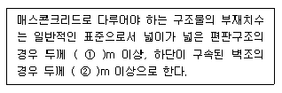
- ①0.6, ②0.3
- ①0.7, ②0.4
- ①0.8, ②0.5
- ①0.9, ②0.6
(정답률: 62%)
3과목: 건축구조
41. 그림과 같이 힘 P가 작용할 때 휨모멘트가 0이 되는 곳은 모두 몇 개인가?
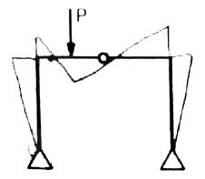
- 2
- 3
- 4
- 5
(정답률: 67%)
42. 그림과 같이 양단 고정인 철골보에 등분포 하중이 작용할 때, 소요되는 단면계수 값은? (단, SS400 강재사용, fb=160MPa, 좌굴은 없는 것으로 가정한다.)
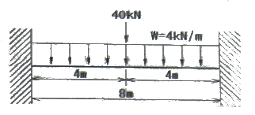
- 383cm3
- 415cm3
- 513cm3
- 558cm3
(정답률: 31%)
43. 그림과 같은 하중을 받는 단순보에서 휨모멘트도로서 옳은 것은?
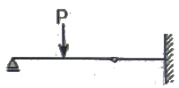
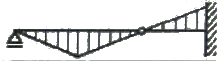
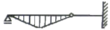
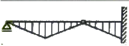
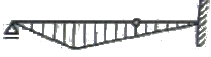
(정답률: 73%)
44. 구조용강재에 대한 설명으로 옳지 않은 것은?
- SS400은 일반구조용 압연강재이다.
- 건축구조용 압연강재(SN)뒤에 붙는 A, B, C는 샤르피 흡수에너지 등급으로 분류된 것이다.
- 건축구조용 압연강재(SN)는 건축물의 내진설계에서 소성변형을 허용하는 설계를 할 수 있다.
- TMC강의 등장은 건축물의 대형화, 고층화와 관계가 깊다.
(정답률: 50%)
45. 강도설계법에서 휨 또는 휨과 축력을 동시에 받는 부재의 콘크리트 압축연단에서 극한변형률은 얼마로 가정하는가?
- 0.002
- 0.003
- 0.0⑤
- 0.007
(정답률: 74%)
46. 인장력을 받는 원형단면 강봉의 지름을 4배로 하면 수직응력도(Normal stress)는 기존 응력도의 얼마로 줄어드는가?
- 1/2
- 1/4
- 1/8
- 1/16
(정답률: 72%)
47. 강도설계법에서 D19 압축철근의 기본정착길이는? (단, D19의 단면적은 287mm2, fck=21MPa, fy=400MPa)
- 674mm
- 570mm
- 482mm
- 415mm
(정답률: 60%)
48. 그림과 같은 캔틸레버 보에 하중이 작용할 때 B점의 처짐은? (단, 부재의 단면2차모멘트는 I, 탄성계수는 E)
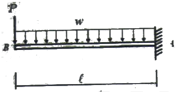
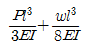
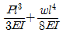
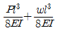
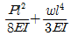
(정답률: 62%)
49. 그림과 같은 부재에 관한 설명으로 옳지 않은 것은? (단, 작용하는 전단력은 72kN이다.)
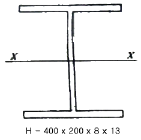
- 최대 휨응력은 플랜지의 바깥면에 생긴다.
- 플랜지의 폭-두께비는 15.38이다.
- 웨브의 폭-두께비는 46.75이다.
- 평균전단응력은 22.5MPa이다.
(정답률: 47%)
50. 그림과 같은 부정정 라멘에서 A점의 MAB는?
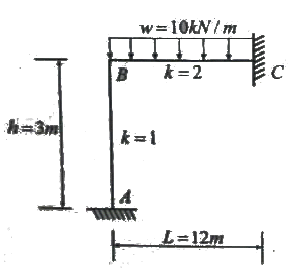
- 0
- 20kNㆍm
- 40kNㆍm
- 60kNㆍm
(정답률: 59%)
51. 극한강도설계법에서 다음과 같은 조건의단면을 가진 부재의 균열모멘트 Mσ을 구하면?
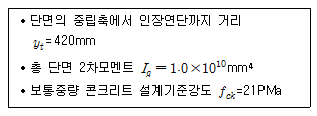
- 50.6kNㆍm
- 53.3kNㆍm
- 62.5kNㆍm
- 68.8kNㆍm
(정답률: 52%)
52. 그림과 같은 보에서 A점에 200kNㆍm의 모멘트가 작용하였을 때 B점이 지지하는 모멘트 및 수직반력은?
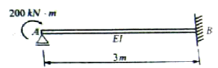
- MBA=200kNㆍm, VB=100kN
- MBA=200kNㆍm, VB=50kN
- MBA=100kNㆍm, VB=100kN
- MBA=100kNㆍm, VB=50kN
(정답률: 59%)
53. 다음과 같은 사다리꼴 단면의 도심 yo 값은?
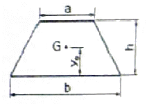
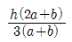
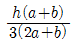
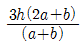
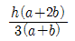
(정답률: 72%)
54. 그림과 같은 단순보의 양지점에 모멘트 M이 작용할 때 A지점의 처짐각은?
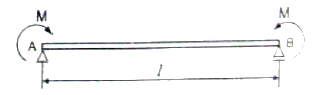
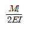
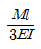
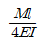
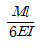
(정답률: 43%)
55. 철골조의 래티스형식 조립압축재에 대한 구조제한에 대한 내용이다. ( )안에 알맞은 것은?
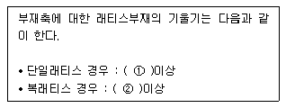
- ① : 50°, ② :40°
- ① : 60°, ② :40°
- ① : 50°, ② :45°
- ① : 60°, ② :45°
(정답률: 66%)
56. 강도설계법에 의한 철근콘크리트 전단설계에서 계수전단력
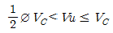
인 경우에 필요한 전단철근의 최소단면적을 구하는 공식은? (단, bw는 복부의 폭, s는 전단철근의 간격)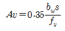
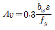
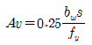
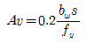
(정답률: 46%)
57. 구조방식과 외부의 힘에 대하여 저항하는 방법으로 옳지 않은 것은?
- 트러스구조 : 인장력과 압축력으로 외력에 저항
- 케이블구조 : 인장력으로 외력에 저항
- 아치구조 : 인장력과 압축력으로 외력에 저항
- 쉘구조 : 면내응력으로 외력에 저항
(정답률: 63%)
58. 다음 그림과 같은 압축재 H-200×200×8×12가 부재의 중앙지점에서 약축에 대해 휨변형이 구속되어 있다. 이 부재의 탄성좌굴응력도를 구하면? (단, 단면적 A=63.53×102mm2, Ix=4.72×107mm4, Iy=1.60×107mm4, E=2⑤,000MPa)(오류 신고가 접수된 문제입니다. 반드시 정답과 해설을 확인하시기 바랍니다.)
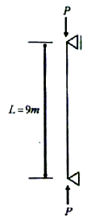
- 252N/mm2
- 186N/mm2
- 132N/mm2
- 108N/mm2
(정답률: 56%)
59. 다음 그림과 같은 라멘의 부정정차수는?
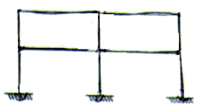
- 6차 부정정
- 8차 부정정
- 10차 부정정
- 12차 부정정
(정답률: 70%)
60. KBC2009에 따른 강도감소계수와 관련된 설명으로 옳지 않은 것은?
- 휨모멘트와 축력을 받는 부재에 대하여 인장지배단면은 공칭강도에서 최외단 인장철근의 순인장변형률 Et가 인장지배변형률 한계인 0.0⑤ 이상인 경우이다.
- 휨모멘트와 축력을 받는 부재에 대하여 압축지배단면은 공칭강도에서 최외단 인장철근의 순인장변형률 Et가 압축지배변형률 한계인 철근의 설계기준 항복변형률 Ey이하인 경우이다.
- 인장지배단면보다 압축지배단면에 대하여 더 작은 ø계수를 사용하는 이유는 압축지배단면의 연성이 더 크고, 콘크리트 강도의 변동에 민감하지 않기 때문이다.
- 나선철근부재의 ø계수는 띠철근 기둥의ø계수보다 크다.
(정답률: 41%)
4과목: 건축설비
61. 복관식 급탕배관방식에 관한 설명으로 옳지 않은 것은?
- 급탕관과 반탕관이 설치된다.
- 저탕조를 중심으로 회로배관을 형성한다.
- 배관이 복잡하여 중앙식 급탕방식에는 적용이 곤란하다.
- 급탕전을 열면 짧은 시간 내에 뜨거운 물을 얻을 수 있다.
(정답률: 66%)
62. 다음 설명에 알맞은 보일러의 종류는?
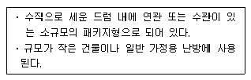
- 수관 보일러
- 관류 보일러
- 입형 보일러
- 주철제 보일러
(정답률: 47%)
63. 실내의 탄산가스 허용농도가 1000ppm, 외기의 탄산가스 농도가 400ppm 일 때, 실내 1인당 필요한 환기량은? (단, 실내 1인당 탄산가스 배출량은 15L/h 이다.)
- 15 m3/h
- 20 m3/h
- 25 m3/h
- 30 m3/h
(정답률: 64%)
64. 흡음 및 차음에 관한 설명으로 옳지 않은 것은?
- 벽의 차음성능은 투과손실이 클수록 높다.
- 차음성능이 높은 재료는 흡음성능도 높다.
- 벽의 차음성능은 사용재료의 면밀도에 크게 영향을 받는다.
- 벽의 차음성능은 동일 재료에서도 두께와 시공법에 따라 다르다.
(정답률: 77%)
65. 옥내소화전설비에 관한 설명으로 옳지 않은 것은?
- 옥내소화전방수구는 바닥면에서 높이가 1.5m 이하가 되도록 설치한다.
- 옥내소화전설비의 송수구는 소방차가 쉽게 접근할 수 있고 노출된 장소에 설치한다.
- 전동기에 따른 펌프를 이용하는 가압송수장치를 설치하는 경우, 펌프는 전용으로 하는 것이 원칙이다.
- 당해 층의 옥내소화전을 동시에 사용할 경우 각 소화전의 노즐선단에서의 방수압력은 최소 0.7MPa 이상이 되어야 한다.
(정답률: 72%)
66. 다음 중 옥내의 노출된 건조한 장소에 시설이 불가능한 배선 방법은? (단, 사용전압이 400V 미만인 경우)
- 급속관 배선
- 버스덕트 배선
- 가요전선관 배선
- 플로어덕트 배선
(정답률: 69%)
67. 에스컬레이터에 관한 설명으로 옳은 것은?
- 수송능력은 엘리베이터와 비슷하다.
- 일반적으로 에스컬레이터의 경사도는 30° 이하로 한다.
- 구동장치, 제어장치 등을 격납하는 기계실은 되도록 크게 한다.
- 정격속도는 하강방향의 안전을 고려하여 45m/min 이하로 하는 것이 원칙이다.
(정답률: 69%)
68. 다음의 각종 급수방식에 관한 설명 중 옳지 않은 것은?
- 수도직결방식은 정전으로 인한 단수의 염려가 없다.
- 압력구조방식은 단수시에 일정량의 급수가 가능하다.
- 고가수조방식은 수도 본관의 영향에 따라 급수압력의 변화가 심하다.
- 수도직결방식은 위생성 및 유지ㆍ관리 측면에서 가장 바람직한 방식이다.
(정답률: 62%)
69. 어떤 실내의 취득열량 중 현열이 35000W 이고 잠열이 9000W 이다. 실내의 공기조건을 25℃, 50%(RH)로 유지하기 위해서 취출온도 10℃로 송풍하고자 할 때 현열비는?
- 0.6
- 0.8
- 1.9
- 3.9
(정답률: 67%)
70. 습공기의 상태변화에 관한 설명으로 옳지 않은 것은?
- 가열하면 엔탈피는 증가한다.
- 냉각하면 비체적은 감소한다.
- 가열하면 절대습도는 증가한다.
- 냉각하면 습구온도는 감소한다.
(정답률: 76%)
71. 다음 중 그 값이 클수록 안전한 것은?
- 접지저항
- 도체저항
- 접촉저항
- 절연저항
(정답률: 76%)
72. 수평보행기에 관한 설명으로 옳지 않은 것은?
- 경사각이 6° 이하인 수평보행기의 경우 광폭형을 설치 할 수 없다.
- 수평보행기 디딤판(팰릿)의 디딤면의 주행방향 길이는 제한하지 않는다.
- 수평보행기 디딤판의 속도는 경사도가 8° 이하인 것은 50m/min 이하로 하여야 한다.
- 수평보행기의 디딤면이 고무제품 등 미끄러지기 어려운 구조일 경우 경사도를 15° 이하로 할 수 있다.
(정답률: 37%)
73. 다음 중 강전설비에 해당하는 것은?
- 전화설비
- 변전설비
- 방송설비
- 인터폰설비
(정답률: 76%)
74. 다음 중 트랩의 봉수파괴 원인과 가장 거리가 먼 것은?
- 증발현상
- 모세관현상
- 자정(自淨)작용
- 자기사이폰작용
(정답률: 65%)
75. 도시가스사용시설의 시설기준에 관한 설명으로 옳지 않은 것은?
- 건축물 안의 배관은 매설하여 시공하는 것을 원칙으로 한다.
- 가스계량기와 전기계량기의 거리는 60cm 이상 유지하여야 한다.
- 지상배관은 부식방지도장 후 표면색상을 황색으로 도색하는 것이 원칙이다.
- 가스계량기는 보호상자 안에 설치할 경우 직사광선이나 빗물을 받을 우려가 있는 곳에 설치할 수 있다.
(정답률: 74%)
76. 전기설비기술기준에 따른 용어의 정의가 옳지 않은 것은?(2021년 개정된 KEC 규정 적용됨)
- 전로란 통상의 사용 상태에서 정기가 통하고 있는 곳을 말한다.
- 전압의 구분에서 저압은 직류는 1500V 이하, 교류는 1000V 이하인 것을 말한다.
- 광섬유케이블이란 광신호의 전송에 사용하는 보호 피복으로 보호한 전송매체를 말한다.
- 배선이랑 전기사용 장소에 시설하는 전선을 말하며, 전기기계기구 내의 전선 및 전선로의 전선을 포함한다.
(정답률: 50%)
77. 배관재료에 관한 설명으로 옳지 않은 것은?
- 주철관은 강관에 비해 내식성이 우수하다.
- 강관의 접합에는 납땜접합이 가장 많이 이용된다.
- 동관은 관의 두께에 따라 K, L, M 타입으로 구분된다.
- 합성수지관은 온도 변화에 따른 신축에 유의하여야 한다.
(정답률: 54%)
78. 축전지의 충전 방식 중 필요할 때마다 표준 시간율로 소정의 충전을 하는 방식은?
- 급속충전
- 보통충전
- 부동충전
- 세류충전
(정답률: 79%)
79. 0℃의 물 400kg을 50℃로 올리는데 30분이 소요되었다면 가열열량은? (단, 물의 비열은 4.2kJ/kgㆍK 이다.)
- 42000 kJ/h
- 84000 kJ/h
- 126000 kJ/h
- 168000 kJ/h
(정답률: 44%)
80. 다음의 각종 난방방식에 관한 설명 중 옳지 않은 것은?
- 증기난방은 잠열을 이용한 난방이다.
- 온풍난방은 간접 난방방식에 속한다.
- 온수난방은 온수의 헌열을 이용한 난방이다.
- 복사난방은 열용량이 작으므로 간헐난방에 적합하다.
(정답률: 69%)
5과목: 건축법규
81. 노상주차장의 구조ㆍ설비기준에 관한 내용 중 옳지 않은 것은?
- 고가도로에 설치하여서는 아니된다.
- 너비 6m 미만의 도로에 설치하지 않는 것이 원칙이다.
- 종단경사도가 4%를 초과하는 도로에 설치하지 않는 것이 원칙이다.
- 주차대수 10대 마다 장애인전용주차구획을 1면씩 확보하여야 한다.
(정답률: 63%)
82. 특별피난계단 및 비상용승강기의 승강장에 설치하는 배연설비에 관한 기준 내용으로 옳지 않은 것은?
- 배연기에는 예비전원을 설치할 것
- 배연구가 외기에 접하지 아니하는 경우에는 배연기를 설치할 것
- 배연기는 배연구의 열림에 따라 자동적으로 작동하고, 충분한 공기배출 또는 가압능력이 있을 것
- 배연구는 평상시에 열린 상태를 유지하고, 닫힌 경우에는 매연에 의한 기류로 인하여 열리지 아니하도록 할 것
(정답률: 76%)
83. 그림과 같은 대지의 도로 모퉁이 부분의 건축선으로서 도로 경계선의 교차점에서의 거리 “A"로 옳은 것은?
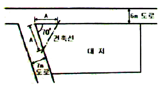
- 1m
- 2m
- 3m
- 4m
(정답률: 61%)
84. 방화와 관련하여 같은 건축물에 함께 설치할 수 없는 것은?
- 의료시설과 업무시설 중 오피스텔
- 위험물 저장 및 처리시설과 공장
- 위락시설과 문화 및 집회시설 중 공연장
- 공동주택과 제2종 근린생황시설 중 고시원
(정답률: 50%)
85. 그림과 같은 일반 건축물의 건축 면적은? (단, 평면도 건물 치수는 두께 300mm인 외벽의 중심치수이고, 지붕선 치수는 지붕외곽선 치수임)
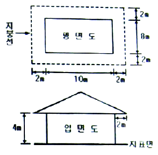
- 80m2
- 100m2
- 120m2
- 168m2
(정답률: 74%)
86. 주거지역의 세분 중, 중층주택을 중심으로 편리한 주거환경을 조성하기 위하여 필요한 지역은?
- 제1종 일반주거지역
- 제2종 일반주거지역
- 제1종 전용주거지역
- 제2종 전용주거지역
(정답률: 74%)
87. 태양열을 주된 에너지원으로 이용하는 주택의 건축면적 산정시 기준이 되는 것은?
- 외벽의 중심선
- 외벽의 내측 벽면선
- 외벽 중 외측 내력벽의 중심선
- 외벽 중 내측 내력벽의 중심선
(정답률: 71%)
88. 대형건축물의 건축허가 사전승인신청시 제출도서 중 설계설명서에 표시하여야 할 사항에 해당하지 않는 것은?
- 시공방법
- 동선계획
- 개략공정계획
- 각부 구조계획
(정답률: 66%)
89. 건축물의 내부에 설치하는 피난계단의 구조에 관한 기준내용으로 옳지 않은 것은?
- 건축물의 내부에서 계단실로 통하는 출입구의 유효너비는 0.9m 이상으로 할 것
- 계단실의 실내에 접하는 부분의 마감은 불연재료 또는 준불연재료로 할 것
- 건축물의 내부에서 계단실로 통하는 출입구에는 피난의 방향으로 열 수 있는 갑종방화문을 설치할 것
- 건축물의 내부와 접하는 계단실의 창문 등(출입구는 제외)은 망이 들어있는 유리의 붙박이창으로서 그 면적을 각각1m2 이하로 할 것
(정답률: 70%)
90. 다음 중 건축물의 관람석 또는 집회실로서 그 바닥면적이 200m2 이상인 경우 반자높이를 4m 이상으로 하여야 하는 것은? (단, 기계환기장치를 설치하지 않은 경우)
- 전시장
- 식물원
- 동물원
- 장례식장
(정답률: 65%)
91. 건축물의 건축시 건축물의 설계자가 국토해양부령으로 정하는 구조기준 등에 따라 그 구조의 안전을 확인하는 경우 건축구조기술사의 협력을 받아야 하는 대상 건축물 기준으로 옳지 않은 것은?(관련 규정 개정전 문제로 기존 정답은 3번이었습니다. 여기서는 3번을 누르면 정답 처리 됩니다. 자세한 내용은 해설을 참고하세요.)
- 다중이용건축물
- 6층 이상인 건축물
- 기둥과 기둥사이의 거리가 20m 이상인 건축물
- 한쪽 끝은 고정되고 다른 끝은 지지되지 아니한 구조로 된 차양 등이 외벽의 중심선으로부터 3m 이상 돌출된 건축물
(정답률: 77%)
92. 다음 중 용도변경시 허가를 받아야 하는 경우에 해당하지 않는 것은?
- 주거업무시설군에 속하는 건축물의 용도를 근린생활시설군에 해당하는 용도로 변경하는 경우
- 문화 및 집회시설군에 속하는 건축물의 용도를 영업시설군에 해당하는 용도로 변경하는 경우
- 전기통신시선군에 속하는 건축물의 용도를 산업 등의 시설군에 해당하는 용도로 변경하는 경우
- 교육 및 복지시설군에 속하는 건축물의 용도를 문화 및 집회시설군에 해당하는 용도로 변경하는 경우
(정답률: 65%)
93. 부설주차장의 총주차대수 규모가 8대 이하인 자주식주차장의 구조 및 설비 기준 내용으로 옳지 않은 것은? (단, 지평식의 경우)
- 출입구의 너비는 2.0m 이상으로 한다.
- 주차단위구획과 접하여 있지 않은 차로의 너비는 2.5m 이상으로 한다.
- 평행주차형식인 경우 주차단위구획과 접하여 있는 차로의 너비는 3.0m 이상으로 한다.
- 주차대수 5대 이하의 주차단위구획은 차로를 기준으로 하여 세로로 2대까지 접하여 배치할 수 있다.
(정답률: 43%)
94. 다음과 같은 조건에 있는 건축물의 지상에 설치하여야 하는 조경 면적은 최소 얼마 이상이어야 하는가?
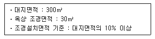
- 10m2
- 15m2
- 20m2
- 30m2
(정답률: 64%)
95. 다음의 노외주차장의 설치에 대한 계획기준 내용 중 ( )안에 알맞은 것은?(관련 규정 개정전 문제로 여기서는 기존 정답인 4번을 누르면 정답 처리됩니다. 자세한 내용은 해설을 참고하세요.)
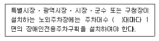
- 20
- 30
- 40
- 50
(정답률: 45%)
96. 노외주차장의 내부 공간의 일산화탄소의 농도는 주차장을 이용하는 차량이 가장 빈번한 시각의 앞뒤 8시간의 평균치가 몇 ppm 이하로 유지되어야 하는가?
- 80ppm
- 70ppm
- 60ppm
- 50ppm
(정답률: 57%)
97. 공사감리자가 수행하여야 하는 감리 업무에 해당하지 않는 것은? (단, 기타 공사감리계약으로 정하는 사항은 제외)
- 상세시공도면의 검토ㆍ확인
- 공사현장에서의 안전관리의 지도
- 설계변경의 적정여부의 검토ㆍ확인
- 공사금액의 적정여부의 검토ㆍ확인
(정답률: 58%)
98. 국토의 계획 및 이용에 관한 법령상 기반시설 중 도로의 세분에 해당하지 않는 것은?
- 일반도로
- 고가도로
- 고속도로
- 보행자전용도로
(정답률: 70%)
99. 건축물의 면적ㆍ높이 및 층수의 산정방법으로 옳지 않은 것은?
- 지하주차장의 경사로는 건축면적에 산입하지 아니한다.
- 연면적은 하나의 건축물 각 층의 바닥면적의 합계로 하되, 용적률을 산정할 때에는 지하층의 면적은 제외한다.
- 건축물의 대지에 접하는 전면도로의 노면에 고저차가 있는 경우에는 건축물의 높이는 전면도로의 중심선으로부터의 높이로 산정한다.
- 건축물의 대지의 지표면이 전면도로보다 높은 경우에는 그 고저차의 2분의 1의 높이만큼 올라온 위치에 그 전면 도로의 면이 있는 것으로 본다.
(정답률: 50%)
100. 다음 중 준주거지역안에서 건축할 수 있는 건축물은? (단, 도시계획조례가 정하는 건축물은 제외)
- 발전시설
- 장례식장
- 안마시술소
- 교육연구시설
(정답률: 54%)
이유는 다음과 같습니다.
- 단층형: 한 층으로 이루어진 형태로, 공동주택으로는 부적합합니다.
- 플랫형: 각 층마다 동일한 구조를 가지는 형태로, 이 경우에는 층간 구조가 다양하므로 공동주택으로는 적합하지 않습니다.
- 메조넷형: 중간층에 상업시설이 위치하고, 주거층이 위아래로 분리된 형태로, 공동주택으로는 적합하지 않습니다.
- 스킵 플로어형: 일정 층마다 건물 내부를 건너뛰는 형태로, 층간 구조가 다양하면서도 주거공간의 개별성을 보장할 수 있어 공동주택으로 적합합니다.